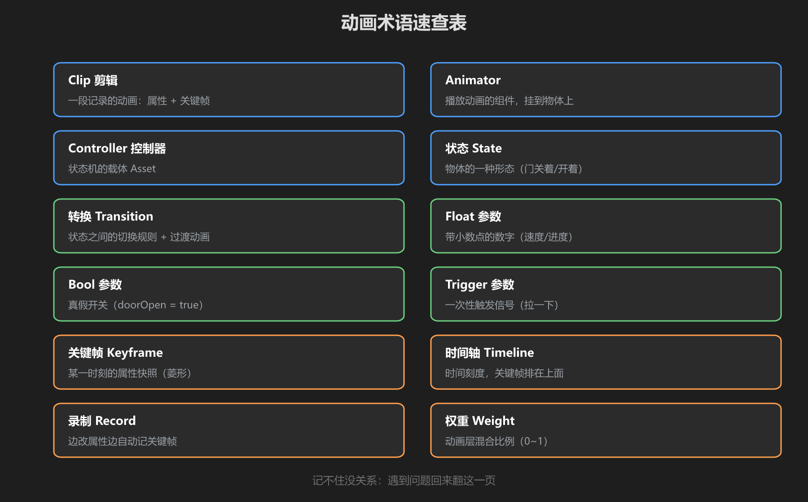
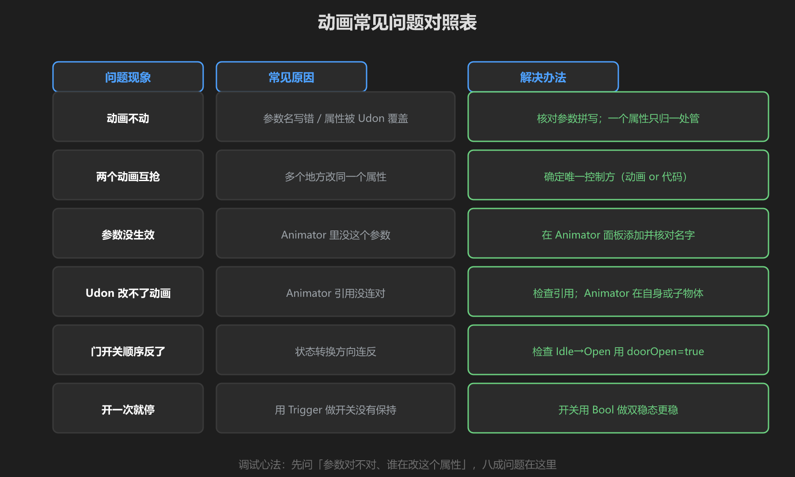
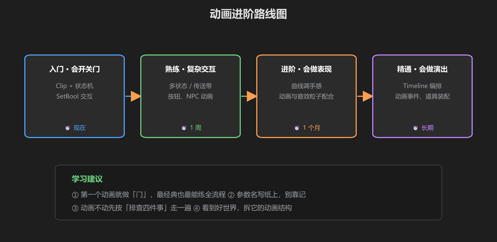

第 6 篇：速查表 & 常见问题
做完前五篇后，遇到问题先来这里翻。
1. 术语速查表

图：12 个必懂术语
| 术语 | 一句话解释 |
|---|---|
| Animation Clip | 一段记录物体怎么动的片段（关键帧） |
| Animator Controller | 状态机：管理多个 Clip 谁在播、何时切换 |
| 状态 State | 状态机里的方块，挂一段 Clip |
| 转换 Transition | 状态间的箭头，带切换条件 |
| Bool / Float / Trigger | 三种参数：开关 / 数值 / 一次性触发 |
| 关键帧 | 时间轴上记录属性值的点 |
| 时间轴 | 动画窗口的横轴，关键帧排在上面 |
| 曲线 | 控制加减速的曲线（缓入缓出） |
| Any State | 从任何状态都能出发的转换入口 |
| SetBool | Udon 给 Animator 写 Bool 参数 |
| VRC_Interactable | VRChat 交互组件，玩家可碰 |
| 默认状态 | 绿色方块，进场先播放的状态 |
2. 常见问题对照表

图：现象 → 原因 → 解法
| 现象 | 原因 | 解法 |
|---|---|---|
| 动画不动 | Animator 没挂 Controller / 默认状态错误 | 检查组件和默认状态 |
| SetBool 没反应 | 参数名拼错（不报错！） | 核对 Animator 参数名 |
| 门开一半卡住 | 动画被脚本覆盖 / 转换没连完 | 一个属性一个主人，检查转换 |
| 关回时瞬移 | 关门 Clip 没从当前位置开始 | 关门 Clip 首帧记录当前状态 |
| 多人看到不同状态 | 动画参数没同步 | 同步 isOpen 变量，各端 SetBool |
| Trigger 反复触发 | Trigger 参数没复位 | 用 Bool 代替，或手动复位 |
3. 进阶路线图

图：入门 → 熟练 → 进阶 → 精通
| 阶段 | 目标 | 学习内容 |
|---|---|---|
| 入门 | 会做物体动画 | 本教程：录制 + 状态机 + 交互 |
| 熟练 | 会做复杂动画 | 多状态切换、Any State、曲线调手感 |
| 进阶 | 会做角色动画 | 人形 Avatar、IK、动画层 Layer |
| 精通 | 会做表现 | 动画 + 特效 + 音频联动、程序化动画 |
最后的话：动画是"状态 + 时间"的学问：先把状态画出来，再录动画、连转换。状态清楚，动画就不会乱。